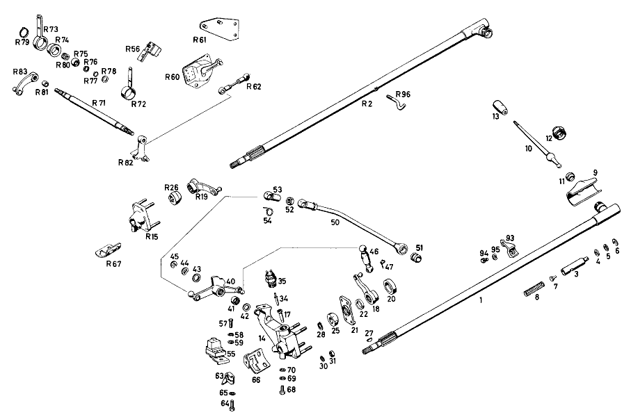

| № | Артикул | Название | Кол. | Примечание | Ограничение |
|---|---|---|---|---|---|
| 1 | A 112 260 05 82 | ТЯГА ПЕРЕКЛЮЧЕНИЯ | 1 | Рулевое управление: ВлевоАвтоматическая коробка переключения передач | |
| 2 | A 109 260 01 82 | ТЯГА ПЕРЕКЛЮЧЕНИЯ | 1 | Рулевое управление: ВправоАвтоматическая коробка переключения передач | |
| 3 | A 111 268 05 39 | НАПРАВЛЯЮЩ. ЦАПФА | 1 | Автоматическая коробка переключения передач | |
| 4 | A 111 997 12 40 | Уплотнительное кольцо | 2 | Автоматическая коробка переключения передач | |
| 5 | A 186 990 69 40 | Диск | NB | Автоматическая коробка переключения передач | |
| 6 | A 186 268 02 73 | предохранитель | 1 | Автоматическая коробка переключения передач | |
| 7 | A 186 268 02 74 | Палец | 1 | Автоматическая коробка переключения передач | |
| 8 | A 182 993 08 01 | пружина | 1 | Автоматическая коробка переключения передач | |
| 9 | A 111 268 03 97 | Манжета | 1 | Автоматическая коробка переключения передач | |
| 10 | A 180 268 05 24 | Рычаг перекл.передач | 1 | Автоматическая коробка переключения передач | |
| 11 | A 111 268 03 92 | РЕЗИНОВАЯ ПОДУШКА | 1 | Автоматическая коробка переключения передач | |
| 12 | A 180 268 00 57 | Колпачок | 1 | Автоматическая коробка переключения передач | |
| 13 | A 180 268 05 40 | ДЕРЖАТЕЛЬ | 1 | SHIFT LEVER, DARK GRAPHITE GREY Автоматическая коробка переключения передач | |
| 14 | A 112 260 12 94 | ОПОРА ПОДШИПНИКА | 1 | Рулевое управление: ВлевоАвтоматическая коробка переключения передач | |
| 15 | A 109 260 01 94 | ОПОРА ПОДШИПНИКА | 1 | Рулевое управление: ВправоАвтоматическая коробка переключения передач | |
| 17 | A 111 268 08 50 | - ВТУЛКА | 1 | Рулевое управление: ВлевоАвтоматическая коробка переключения передач | |
| 17 | A 111 268 08 50 | - ВТУЛКА | 1 | Рулевое управление: ВправоАвтоматическая коробка переключения передач | |
| 18 | A 111 260 03 15 | РЫЧАГ | 1 | Рулевое управление: ВлевоАвтоматическая коробка переключения передач | |
| 19 | A 112 260 01 15 | РЫЧАГ | 1 | Рулевое управление: ВправоАвтоматическая коробка переключения передач | |
| 20 | A 111 268 10 50 | втулка | 1 | Автоматическая коробка переключения передач | |
| 21 | A 112 268 05 57 | ПРОБКА | 1 | Автоматическая коробка переключения передач | |
| 22 | A 111 268 02 51 | Проставочное кольцо | 1 | Автоматическая коробка переключения передач | |
| 25 | A 112 268 05 46 | СЕГМЕНТ ПЕРЕКЛЮЧЕНИЯ | 1 | Рулевое управление: ВлевоАвтоматическая коробка переключения передач | |
| 26 | A 112 268 06 46 | СЕГМЕНТ ПЕРЕКЛЮЧЕНИЯ | 1 | Рулевое управление: ВправоАвтоматическая коробка переключения передач | |
| 27 | N 006888 002000 | Сегментная шпонка | 1 | Рулевое управление: ВлевоАвтоматическая коробка переключения передач | |
| 27 | N 006888 002000 | Сегментная шпонка | 1 | Рулевое управление: ВправоАвтоматическая коробка переключения передач | |
| 28 | N 000471 013000 | Стопорное кольцо | 1 | Рулевое управление: ВлевоАвтоматическая коробка переключения передач | |
| 28 | N 000471 013000 | Стопорное кольцо | 1 | Рулевое управление: ВправоАвтоматическая коробка переключения передач | |
| 30 | N 000137 006203 | Пружинная шайба | 4 | Автоматическая коробка переключения передач | |
| 31 | N 000934 006006 | Гайка | 4 | Автоматическая коробка переключения передач | |
| 34 | A 112 268 04 74 | БОЛТ | 1 | Рулевое управление: ВлевоАвтоматическая коробка переключения передач | |
| 34 | A 112 268 04 74 | БОЛТ | 1 | Рулевое управление: ВправоАвтоматическая коробка переключения передач | |
| 35 | A 000 545 08 06 | Переключатель | 1 | Рулевое управление: ВлевоАвтоматическая коробка переключения передач | |
| 35 | A 000 545 08 06 | Переключатель | 1 | Рулевое управление: ВправоАвтоматическая коробка переключения передач | |
| 40 | A 112 260 08 81 | РЫЧАГ | 1 | Рулевое управление: ВлевоАвтоматическая коробка переключения передач | |
| 41 | A 000 981 21 10 | - Игольчатый подшипник | 2 | Рулевое управление: ВлевоАвтоматическая коробка переключения передач | |
| 42 | A 180 997 08 40 | - УПЛОТНИТ. КОЛЬЦО | 2 | Рулевое управление: ВлевоАвтоматическая коробка переключения передач | |
| 43 | A 312 990 03 40 | Диск | 1 | Рулевое управление: ВлевоАвтоматическая коробка переключения передач | |
| 44 | N 900055 012000 | Пружинная шайба | 1 | Рулевое управление: ВлевоАвтоматическая коробка переключения передач | |
| 45 | N 006799 010001 | Стопорная шайба | 1 | Рулевое управление: ВлевоАвтоматическая коробка переключения передач | |
| 46 | A 000 268 01 66 | ПОДПЯТНИК ШАРОВОЙ | 1 | Автоматическая коробка переключения передач | |
| 47 | N 071805 010400 | Защитный кронштейн | 2 | Автоматическая коробка переключения передач | |
| 50 | A 112 260 30 33 | ТЯГА ПЕРЕКЛ. ПЕРЕДАЧ | 1 | Рулевое управление: ВлевоАвтоматическая коробка переключения передач | |
| 51 | A 112 268 01 50 | - втулка | 1 | Автоматическая коробка переключения передач | |
| 52 | N 070616 010000 | - Гайка | 1 | Автоматическая коробка переключения передач | |
| 53 | A 000 991 09 22 | - ПОДПЯТНИК ШАРОВОЙ | 1 | Автоматическая коробка переключения передач | |
| 54 | N 071805 013400 | - Защитный кронштейн | 1 | Автоматическая коробка переключения передач | |
| 55 | A 001 545 25 24 | Переключатель | 1 | Рулевое управление: ВлевоАвтоматическая коробка переключения передач | |
| 56 | A 001 545 35 24 | ВЫКЛЮЧАТЕЛЬ АВТОМ. | 1 | Рулевое управление: ВправоАвтоматическая коробка переключения передач | |
| 57 | N 000933 005014 | Винт | 1 | Автоматическая коробка переключения передач | |
| 58 | N 000127 005200 | КОЛЬЦО ПРУЖИННОЕ | 1 | Автоматическая коробка переключения передач | |
| 59 | N 000125 005306 | ШАЙБА | 1 | Автоматическая коробка переключения передач | |
| 60 | A 001 545 87 24 | Переключатель | 1 | AND BACK\-UP LIGHT SWITCH Рулевое управление: ВправоАвтоматическая коробка переключения передач | |
| 61 | A 109 540 01 73 | ДЕРЖАТЕЛЬ | 1 | Рулевое управление: ВправоАвтоматическая коробка переключения передач | |
| 62 | A 109 260 01 66 | ПОДПЯТНИК ШАРОВОЙ | 1 | Рулевое управление: ВправоАвтоматическая коробка переключения передач | |
| 63 | A 112 268 00 39 | НАПРАВЛЯЮЩ. ЦАПФА | 1 | Автоматическая коробка переключения передач | |
| 64 | N 000933 006040 | Винт | 1 | Автоматическая коробка переключения передач | |
| 65 | N 000127 006200 | Пружинное кольцо | 1 | Автоматическая коробка переключения передач | |
| 66 | A 112 260 02 28 | Направляющая пластина | 1 | Рулевое управление: ВлевоАвтоматическая коробка переключения передач | |
| 67 | A 112 268 08 47 | КУЛИСА | 1 | Рулевое управление: ВправоАвтоматическая коробка переключения передач | |
| 68 | N 000933 006024 | Винт | 2 | GUIDE PLATE TO BEARING BODY Автоматическая коробка переключения передач | |
| 69 | N 000127 006200 | Пружинное кольцо | 2 | GUIDE PLATE TO BEARING BODY Автоматическая коробка переключения передач | |
| 70 | N 000125 006400 | ШАЙБА | 2 | GUIDE PLATE TO BEARING BODY Автоматическая коробка переключения передач | |
| 71 | A 111 268 07 32 | ВАЛ | 1 | Рулевое управление: ВправоАвтоматическая коробка переключения передач | |
| 72 | A 111 268 02 35 | ПОДШИПНИК | 1 | Рулевое управление: ВправоАвтоматическая коробка переключения передач | |
| 73 | A 109 268 00 01 | КОРПУС | 1 | Рулевое управление: ВправоАвтоматическая коробка переключения передач | |
| 74 | A 111 268 00 86 | Резиновое кольцо | 2 | Рулевое управление: ВправоАвтоматическая коробка переключения передач | |
| 75 | A 111 991 00 29 | Шар | 2 | Рулевое управление: ВправоАвтоматическая коробка переключения передач | |
| 76 | A 180 268 00 76 | ШАЙБА | 4 | Рулевое управление: ВправоАвтоматическая коробка переключения передач | |
| 77 | A 111 997 10 40 | УПЛОТНИТ. КОЛЬЦО | 4 | Рулевое управление: ВправоАвтоматическая коробка переключения передач | |
| 78 | N 000988 010000 | Регулировочная шайба | 4 | Рулевое управление: ВправоАвтоматическая коробка переключения передач | |
| 79 | N 000471 010000 | Стопорное кольцо | 2 | Рулевое управление: ВправоАвтоматическая коробка переключения передач | |
| 80 | A 000 981 18 10 | Игольчатый подшипник | 2 | Рулевое управление: ВправоАвтоматическая коробка переключения передач | |
| 81 | A 112 991 03 40 | РАСПОРН. ТРУБКА | 1 | Рулевое управление: ВправоАвтоматическая коробка переключения передач | |
| 82 | A 109 260 00 81 | РЫЧАГ | 1 | Рулевое управление: ВправоАвтоматическая коробка переключения передач | |
| 83 | A 112 260 10 81 | РЫЧАГ | 1 | Рулевое управление: ВправоАвтоматическая коробка переключения передач | |
| 93 | A 112 268 01 15 | LEVER | 1 | Рулевое управление: ВлевоАвтоматическая коробка переключения передач | |
| 94 | N 000933 006040 | Винт | 1 | Рулевое управление: ВлевоАвтоматическая коробка переключения передач | |
| 95 | N 000137 006200 | Пружинная шайба | 1 | Рулевое управление: ВлевоАвтоматическая коробка переключения передач | |
| 96 | A 112 990 01 38 | БОЛТ | 1 | для GEAR INDICATOR Рулевое управление: ВправоАвтоматическая коробка переключения передач | |
| A 112 260 11 82 | ТЯГА ПЕРЕКЛЮЧЕНИЯ | 1 | Рулевое управление: ВправоАвтоматическая коробка переключения передач | ||
| A 112 260 14 94 | ОПОРА ПОДШИПНИКА | 1 | Рулевое управление: ВправоАвтоматическая коробка переключения передач | ||
| A 112 268 02 46 | СЕГМЕНТ ПЕРЕКЛЮЧЕНИЯ | 1 | Рулевое управление: ВлевоАвтоматическая коробка переключения передач | ||
| A 112 268 04 46 | СЕГМЕНТ ПЕРЕКЛЮЧЕНИЯ | 1 | Рулевое управление: ВправоАвтоматическая коробка переключения передач | ||
| A 112 260 29 33 | ТЯГА ПЕРЕКЛ. ПЕРЕДАЧ | 1 | Рулевое управление: ВправоАвтоматическая коробка переключения передач | ||
| A 000 991 09 22 | - ПОДПЯТНИК ШАРОВОЙ | 1 | Автоматическая коробка переключения передач | ||
| N 000127 005203 | Пружинное кольцо | 2 | SWITCH TO BRACKET Рулевое управление: ВправоАвтоматическая коробка переключения передач | ||
| N 000934 005004 | Гайка | 2 | SWITCH TO BRACKET; M5 Рулевое управление: ВправоАвтоматическая коробка переключения передач | ||
| A 112 260 01 28 | ПЛАСТИНА НАПРАВЛЯЮЩАЯ | 1 | Рулевое управление: ВлевоАвтоматическая коробка переключения передач | ||
| A 112 268 06 47 | КУЛИСА | 1 | Рулевое управление: ВправоАвтоматическая коробка переключения передач | ||
| A 111 268 26 01 | КОРПУС | 1 | Рулевое управление: ВправоАвтоматическая коробка переключения передач | ||
| A 112 260 11 81 | РЫЧАГ | 1 | Рулевое управление: ВправоАвтоматическая коробка переключения передач | ||
| N 000127 007200 | Пружинное кольцо | 2 | LEVER TO INTERMEDIATE SHAFT Рулевое управление: ВправоАвтоматическая коробка переключения передач | ||
| N 000934 007000 | Гайка | 2 | LEVER TO INTERMEDIATE SHAFT Рулевое управление: ВправоАвтоматическая коробка переключения передач | ||
| N 000933 006056 | Винт | 4 | INTERMEDIATE SHAFT TO FRONT PANEL Рулевое управление: ВправоАвтоматическая коробка переключения передач | ||
| N 000127 006200 | Пружинное кольцо | 4 | INTERMEDIATE SHAFT TO FRONT PANEL Рулевое управление: ВправоАвтоматическая коробка переключения передач | ||
| A 000 990 59 91 | ГАЙКОДЕРЖАТЕЛЬ | 4 | INTERMEDIATE SHAFT TO FRONT PANEL Рулевое управление: ВправоАвтоматическая коробка переключения передач | ||
| N 000934 006000 | Гайка | 1 | EYEBOLT TO SHIFTING TUBE Рулевое управление: ВправоАвтоматическая коробка переключения передач |
Позиций: 98 · подписано на схемах: 80 · колесо — плавный зум в курсор, перетаскивание — пан, двойной клик — зум, клик по артикулу — скопировать.